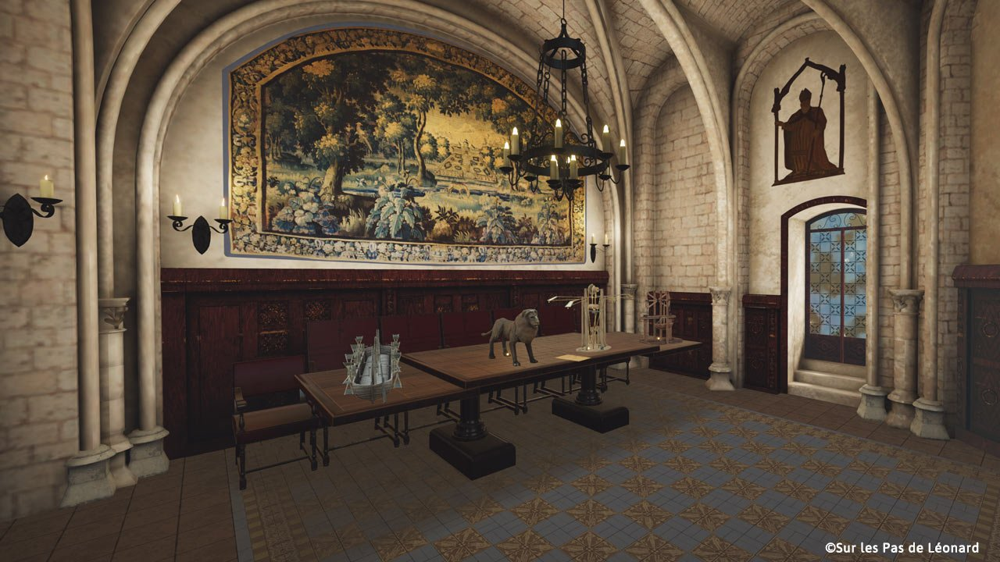
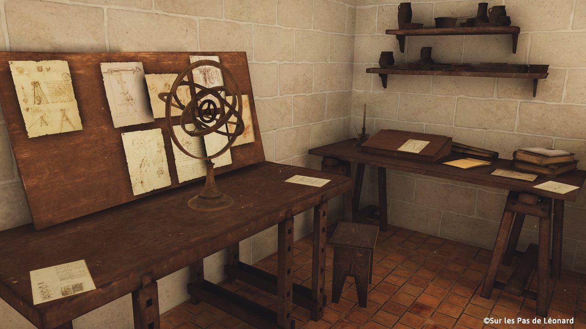
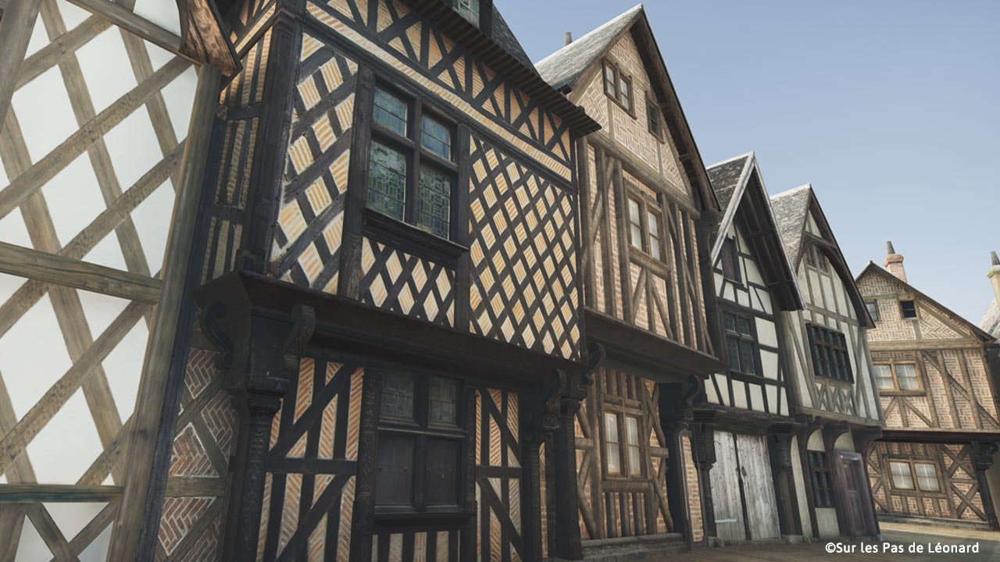
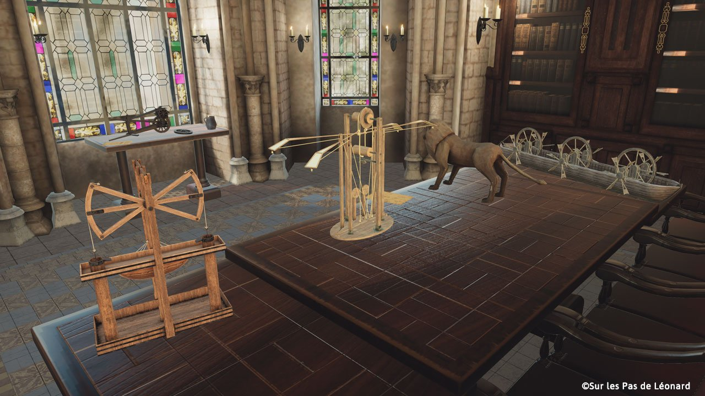

← Projets · Jeu en réalité virtuelle
MécaLéo

Un jeu sérieux en réalité virtuelle pour explorer les machines de Léonard de Vinci : à partir de ses dessins, le joueur résout des énigmes mécaniques et complète ses machines inachevées, dans des décors du XVIe siècle reconstitués.



Images © Sur les pas de Léonard – Université de Tours / CESR
Mon rôle
Développement, lumière et décors
Au sein de l'équipe des Fées Spéciales, qui a finalisé tous les éléments 3D et créé l'ensemble du gameplay, j'ai participé au développement du jeu et pris en charge la lumière, les effets et l'habillage des niveaux.
MécaLéo fait partie de Sur les pas de Léonard, un projet de médiation scientifique du Renaissance Transmedia Lab, aux côtés d'un web-documentaire en 13 épisodes.
